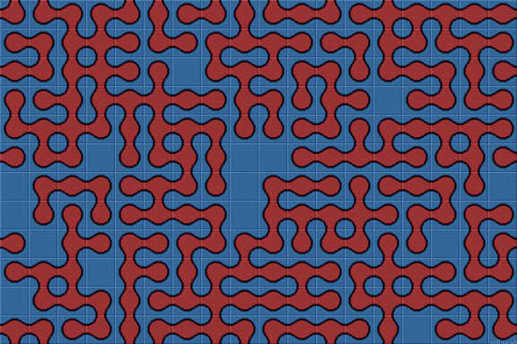

Maze Arrays
The standard 'stage' or array is sized 18 tiles wide by 12 tiles high. (You can always select different stage sizes). Each tile is sized 32x32 pixels. Grid lines between the tiles have been removed.
Wang tiles are selected at random from the tileset and placed in a vacant 'cell' on the stage. There is an unlimited supply of each tile.
Note that all tile edges match. Otherwise a path will abruptly finish at a tile edge, which doesn't look good. So we have blank edge next to blank edge. And path edge next to path edge. This also works across the top and bottom sides of the stage and the right to left sides. We say the stage 'wraps' on all four sides. Mathematically, wrapping two opposite stage sides forms a cylinder and all four sides forms a torus.
Tiling MethodOne method to tile a stage is to imagine the stage is colored like a chess board. Place a random tile on every white square. Then go back and fill in all the black squares, where only one tile can be placed so that all four of its edges match its neighbors. |
Total Possible Layouts
We can use this tiling method to work out the total number of possible layouts. A random tile is placed on half the squares. This gives 16 ^ (18 x 12 x 0.5) which is around 1 followed by 130 zeros!
See if you can work out the total number of possible mazes on a grid that doesn't wrap.
Stage: Random 2-edge Blob Maze Tiles
Procedural Content Generation
Edge or corner Wang tiles make it easy to auto generate large areas of tiled path or terrain background.
As each tile is added, ensure it matches all previously plaaced tiles. If the array is built row by row from the top left, then these can only be above or to the left of the tile. This can make rule writing easier.
If using edge tiles, match upper and left edges, then pick a random lower and right edge. With corner tiles, match three corners and pick the lower-right corner at random.